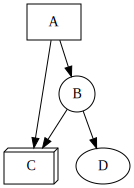
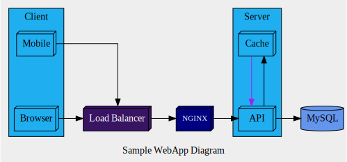

Why do we need System Diagram ?
We need these diagrams to communicate the design of the system or to understand the system in a more visual way. Worded documentation can be useful, but a picture conveys more information in a concise way.
System Diagram as a Graph problem ?
System diagram typically consists of drawing various components of the system and interconnecting them with lines & arrows. Conceptually these can be modelled as a Graph structure. Graphs can be used to represent various components of the system(nodes) and the relationship between them (edges). Then the problem becomes a matter of graph visualization.
Graphviz - A graph visualization tool
Often times drawing pictures manually can be time-consuming or creatively demanding. Tools like
Graphvizpopularize the notion of:diagrams as code/textIt enables one to draw these diagrams in a much faster way.
Author of Pikchr describes it much better here:
The objective is to convey truth, not feeling
Here, we shall explore system-diagram generation through Graphviz.
Think of Graphviz as a
DSLfor graph-visualization. The syntax is somewhat JSON/HCL like. We can draw both directed/undirected graphs. We will go with directed-graphs as they are more common here.
Graph (Directed / Undirected)Nodes (have attributes for labels, shapes, color etc)
Record often used for uml class-diagramsEdges (have attributes for labels, color etc)Clusters (Subgraphs of nodes & edges, can be nested, have attributes)Graphviz code is expressed in DOT language
Let’s go through a simple example to understand it better:
digraph app1 {
// edges are represented by an `arrow` symbol
A -> { B -> C} // `A` has an edge to both `B` & `C`
B -> D
// optionally nodes can have style-attributes
A[shape="box"]
B[shape="circle"]
C[shape="box3d"]
}
graph or digraph (directed-graph).
Here we have taken directed-graph.nodes, edges can be styled with labels, color, shapes etc (similar to css)To generate an image we can use one of the many online editors (https://edotor.net) or command-line tool (https://graphviz.org/download/).
Save the above code to a file with .dot extension. Run this command:
dot -Tsvg file-name.dot > output.svg
It generates the following image below:

Next, lets take a slightly more complex example:
digraph webapp { // directed graph
// left-to-right layout
rankdir="LR";
// graph properties
graph [label="Sample WebApp Diagram", nodesep=1, splines=ortho, bgcolor="#eeeeee"]
// node default attributes
node[shape=box3d]
// edge default properties
edge[]
// nodes with properties
// format: node-name[attr1=value1, attr1=value2]
WebServer [label="NGINX", fontsize=11, fontcolor=white, fillcolor="#000080", style=filled]
ELB [label="Load Balancer", fillcolor="#391463", fontcolor=white, style=filled]
DB [label="MySQL", shape=cylinder, style=filled, fillcolor="#6495ED"]
// subgraphs logically group related nodes
// subgraphs starting with name `cluster` get a border
// subgraphs can be nested
subgraph cluster_1 {
label = "Client"
style=filled; fillcolor="#1FAFF0";
rank=same // assigns same rank to all nodes in the cluster
Mobile[URL="https://www.google.com" target="_graphviz"]
Browser
}
subgraph cluster_2 {
rank=same
label = "Server"
style=filled; fillcolor="#1FAFF0";
Cache -> API[constraint=false, color=purple];
API -> Cache[constraint=false, color="#777"];
}
// edges: connect the nodes with arrows
Browser -> ELB;
Mobile -> ELB-> WebServer -> API -> DB;
}
The above dot example is commented for improved readability. It produces an image like below:

As a programmer, it is good to add Graphviz to your toolkit.
There are many tools & libraries which have graphviz bindings.
Instead of writing in DOT if you want to write in your preferred language, it may be worth exploring.